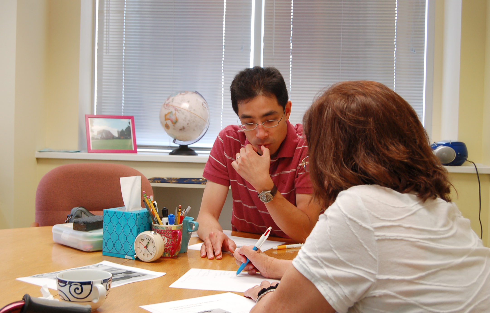

Express Yourself with Confidence in English

Our English for Professionals program is designed for professionals that want to be more effective working in English. Most of our students have already studied English for some time and are already working or studying in an English language environment. However, they realize that high-level language proficiency can be an enormous advantage and they are willing to invest time in this program to meet their professional goals.
At English Now!, our students’ goals become our goals, and we help them to:
- Succeed in today's job market by improving their English communication competency/skills.
- Improve their confidence, comfort and productivity through an English for Professionals curriculum customized to their needs.
- Excel in their careers by refining their presentation skills, English vocabulary and/or professional writing.
- Focus on issues specifically relevant to their work, especially in private lessons with field-specific curriculum, such as Economics, Business, Marketing, Health Care, Government Relations or Development.
Our classes are small. The maximum number of students in our group classes is six, ensuring that each student receives significant attention. Many students choose to enroll in private lessons alongside group classes, to ensure personalized attention to their specific needs.
Our curriculum is relevant. We use engaging, multimedia curricula drawn from sources such as TED talks, National Public Radio, Voice of America. In addition, our instructors often use a Cambridge University Press book series called Professional English in Use, which gives us the ability to focus on English for fields including Health Care/Medicine, Marketing, Law, ICT, Engineering, Construction, Media, and more. Our Business English students have even more resources to draw on. Our students complete listening exercises, speak to persuade, write essays and prepare presentations on topics that relate to a professionals’ communication needs.
Expect yourself to be challenged in this environment. Expect to meet a fantastic group of classmates from all over the world. Our English for Professionals students in Saturday classes sometimes even go on outings together.
Dates: English for Professionals classes meet year-round. New students may join the class at any time, so long as space is available.
Tuition: See “Schedule” section below. Students register for eight weeks at a time.
Registration Fee: One-time registration fee of $40.
Schedule
Tuesday Evenings: Private lessons tailored to your needs meet at 6:00pm-7:15pm or 7:15pm-8:30pm. Tuition is $400 for eight weeks.
Thursday Evenings: Private lessons available 6:00pm-7:15pm or 7:15pm-8:30pm. Tuition is $400 for eight weeks.
Weekday early morning private lesson: Do a lesson on your way to work. Tuition based on schedule. $40 per class hour at English Now! or $50 per class hour offsite.
Saturday Mornings: Small group classes 9:45am-11:45am. Maximum six students. Tuition is $360 for eight weeks.
Select the classes that fit your schedule best. Also, private lessons can be held at English Now! or at your home or workplace, at your convenience.
Students may enroll in multiple classes if they wish to pursue a more intensive approach to English for Professionals studies.
Understand How You Engage in the Workplace
In addition to strong language skills, success in an American, English-language work environment requires cross-cultural competencies as well as an understanding of one's own strengths and weaknesses. Operating outside one's home culture is demanding. It requires strong "soft skills" and an ability to confront challenges with perseverance and humility. At the same time, it is rewarding personally and professionally to interact with Americans and others in Washington, D.C.'s unique environment - and your work can have a greater impact here than in most other cities, if it is done well.
English Now! also offers Myers Briggs Type Indicator (MBTI) assessments for our students, to complement our language classes. The MBTI helps you understand your work style, including: how you manage your time, problem solving, best approaches for decision making, and dealing with stress. Knowledge of type can help you better understand the culture of your workplace, how to participate in teams, and how to relate to colleagues. We can administer the official MBTI in any of 28 different languages, to control for language differences. Debrief sessions are conducted in English with a certified MBTI trainer and member of our faculty, Elizabeth Boesen.
For more information on the MBTI and how it may help you better engage in your professional environment, please contact Elizabeth at elizabeth.boesen@english-now.com or visit us.
English for Professionals Leadership & Instructors
Paul Boesen is English Now!'s Managing Director. Prior to his career in education, Paul worked in investment banking and private equity for the Goldman Sachs Group in New York, Frankfurt, and Singapore; and for the World Economic Forum in Geneva and Beijing. Paul’s academic background is in economics, Asian studies, and law, and he is a graduate of the University of Michigan and Harvard Law School. In addition to his work at English Now!, Paul works part-time as a Senior Advisor to the GreenPoint Group, a Washington, DC- and Beijing-based strategic advisory firm advising U.S. and international clients on China strategic positioning and government relations. He also serves as Special Advisor to the US-China Education Trust, a Washington-based non-profit organization whose mission is to promote US-China relations through education and exchange for China’s next-generation leaders. To learn more about GreenPoint, please visit www.greenpoint-group.com. For information on USCET, please visit the USCET website at www.uscet.net. Paul resides in Falls Church, Virginia, with his wife, Elizabeth, and their three children, Erik (16), Megan (13), and Hannah (8).
Michael David serves as English Now!'s Director of Business and Sales/Marketing English. He teaches ESOL chiefly to students at the high intermediate and advanced levels. A graduate of Hobart & Wm Smith Colleges, Michael first served in the US Air Force and then had a successful career in business-to-business sales. Following several decades of working in business, Michael decided to pursue a career teaching ESOL. He then earned a certificate from Lado International College in teaching English as a foreign language. Michael lives in Takoma Park, Maryland, and enjoys antique automobiles, vintage western swing and country music, cooking, reading, and politics.
 Susan Kay’s path to English language teaching began when she was an attorney for the Legal Aid Society in New York City for a largely immigrant population in need of representation and assistance navigating the complicated legal system. When she first moved to Washington, D.C., she worked as an attorney for the Federal Election Commission monitoring the public funding of Presidential campaigns, but later decided to focus again on helping people conquer language barriers. She volunteered at the Washington English Center where she taught students from countries all over the world who were trying to obtain U.S. citizenship. After returning to school and completing Georgetown University’s TEFL program, she taught students in a private language school and at the Arlington County Public Schools’ REEP program for adult immigrants. Susan has a B.A. from Barnard College, Columbia University and a J.D. from the George Washington University Law School. She lives in Washington, D.C. with her husband and two sons.
Susan Kay’s path to English language teaching began when she was an attorney for the Legal Aid Society in New York City for a largely immigrant population in need of representation and assistance navigating the complicated legal system. When she first moved to Washington, D.C., she worked as an attorney for the Federal Election Commission monitoring the public funding of Presidential campaigns, but later decided to focus again on helping people conquer language barriers. She volunteered at the Washington English Center where she taught students from countries all over the world who were trying to obtain U.S. citizenship. After returning to school and completing Georgetown University’s TEFL program, she taught students in a private language school and at the Arlington County Public Schools’ REEP program for adult immigrants. Susan has a B.A. from Barnard College, Columbia University and a J.D. from the George Washington University Law School. She lives in Washington, D.C. with her husband and two sons.
Katie Lootens is from Indianapolis, Indiana. Before moving to the Washington, D.C. area, she served as a 7th and 8th grade English teacher in Benin, West Africa with the Peace Corps, and she has also taught and/or worked in Uganda and Senegal. In addition to her students at school in Benin she taught and coordinated English classes for adult refugees living in Cotonou. Katie has a degree in International Relations and African/African-American Studies from Duke University and a Master of Management Studies from Duke's Fuqua School of Business. Most recently, she worked for a nonprofit promoting U.S. trade with Africa, helping health companies investing in the continent. Katie enjoys travel, books, running, and watching basketball.
Deborah Ou-Yang has taught English in Japan, South Korea as a Fulbright English teaching assistant, and with the Peace Corps in Thailand. Her first class in Japan was with senior citizens, one of whom was from Hiroshima and had lived through World War II but was keen to learn the English language and about American culture. Through this group, she developed a passion for teaching and learning the stories and experiences her students have to share. She is excited to teach in the U.S. with English Now! Having grown up in a bilingual household (中文 and English) with a family who loves to travel, Debi is looking forward to meeting and working with students from different backgrounds and cultures. Debi is a recent graduate of Georgetown University's Master of Science in Foreign Service Program and currently works as a communications associate at the World Bank. Debi is a native of Pennsylvania and graduated with a B.A. in English Literature and Asian Studies from Lehigh University.
Joann Robertson teaches conversational, business and legal English. She teaches international attorneys, journalists, diplomats, military officials, and clergy the skills of American public speaking, advocacy and negotiation. She enjoys meeting people from all over the world and is very happy to be joining the English Now! faculty. Joann is also an experienced trial attorney with an AV rating. She is a former Associate County Attorney with Montgomery County Attorney’s Office where she served as Chief of Litigation from 1986 - 2006. During this time she oversaw a staff of eight attorneys and tried over 35 jury trials and 100 bench trials and administrative hearings. She litigated serious personal injury, civil rights, employment discrimination and child welfare cases in Maryland and District of Columbia District and Circuit Courts, as well as the Federal District Courts of Maryland and the District of Columbia. She has also presented and argued briefs before the Maryland Court of Appeals, the Fourth Circuit Court of Appeals and the District of Columbia Court of Appeals. After retiring as Chief of Litigation, she was rehired by the County Attorney’s Office to litigate child welfare cases from 2006-2010. In 2009, Joann became certified to teach ESL by the Lado Institute TEFL program and was hired by Lado to teach English to foreign students. She has also been teaching group and individual ESL classes at the Brazilian Naval Commission, and the Embassies of Brazil and Peru. Since 2011, she has been training and coaching teacher trainees for the Lado TEFL teacher certification program. During 2012-2013, Joann was an Adjunct Professor at American University International Law School, teaching legal research and writing to international law school students.
Katie Sciarini grew up in Springfield, VA and considers Washington, D.C. home these days. Katie earned her Bachelor of Social Work from James Madison University in Harrisonburg, VA in 2003 and has been on the move ever since. She was most recently in Sierra Leone serving on an Ebola Response team and prior to that spent three years in Thailand working on Burma issues with Burmese and international NGOs. Katie is fluent in Spanish, which she learned during her three years of Peace Corps service in Ecuador, and she enjoys practicing French as long as you don’t mind her accent! Katie’s background includes work in both grants management and programmatic roles, and she is a passionate advocate for immigrants and refugees. In addition, Katie has discovered a love of teaching, mentoring and writing over the course of her career which she is excited to share with students at English Now!. In her free time Katie enjoys yoga, cooking, salsa dancing and exploring the D.C. area by bike.